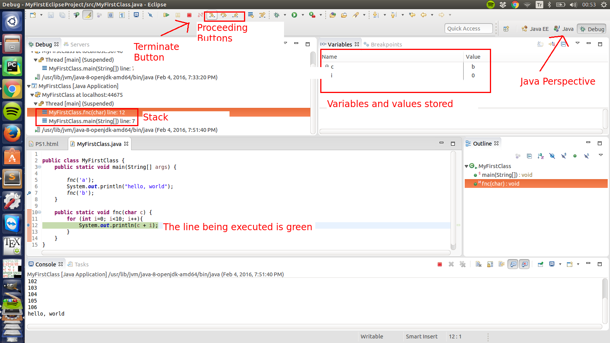

Debugging - Bocekten Arindirma
-
What is debugging:
When projects get bigger and bigger, it becomes much easier to make mistakes. Debugging is the process of finding out bugs in the code.
-
How to debug:
-
One and most famous way is to fill your code with System.out.println statements.
-
A better way is to use the debug tool in Eclipse. Debugging in Eclipse helps you find the causes or errors by allowing you to execute the code line by line and see what's stored in variables at any time. This is as if your code being executed in slow motion.
-
Debugging in Eclipse: Now, let's say your code is buggy and you certainly need to debug your code. The first thing to do is to set breakpoints. As its name implies, breakpoints are where execution is stopped and debugging begins.
-
If you have an idea about the broken part in your code: Go to this line and double click to the line number at the beginning of the line. You will see a blue dot, this is a breakpoint.
-
If you do not have an idea about the broken part: Go the first line to be executed in the whole program and double click to the line number at the beginning of the line. You will see a blue dot, this is a breakpoint.
Then, find the bug in the icon bar (just next to run button) and click on. Accept if your are asked to switch perspective or not. The next thing you would see is something like this:

In this window, you can see the state of your program:
-
Stack:The flow of your program, or simply the methods called.
-
Variables and values stored in them
-
The line that is currently being executed
-
Console outputs
-
These are three most commonly used proceeding buttons:
-
Step Into(F5):The current statement is executed. If it invokes some other methods, you would step into the execution of this method.
-
Step Over(F6):The current statement is executed and switched to the next statement in your code.
-
Step Return(F7):The current statement is executed until it returns something.
-
Resume(F8):Run the program until the next breakpoint.
-
End of debugging: Click on terminate button and switch to Java perspective.